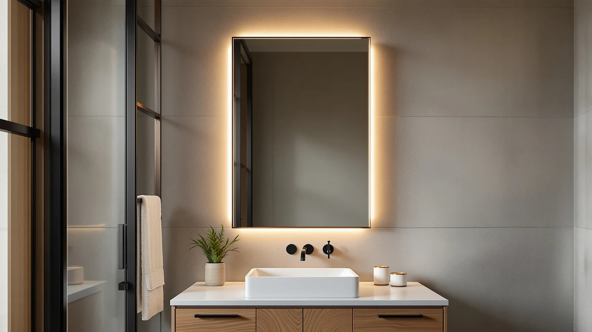

How to Frame a Bathroom Mirror with Clips: Complete Guide (2026)
Prices and picks verified as of September 2026. Independent, reader-supported reviews.


Things to Know Before You Buy
- Measure before you buy anything. When you frame a bathroom mirror with clips, the molding profile and clip depth both depend on your glass's exact width, height, and thickness, so measure twice before ordering material.
- This method needs a bare mirror. Clip-on framing works on a flat, unframed mirror glued or clipped straight to the wall. If yours already has a frame, see our framed vs. frameless mirror guide to compare the two styles.
- Pick a channel deep enough to grip the glass. The molding needs a rabbet or J-channel that clears the mirror's edge without pressing on the reflective surface.
- Finish the wood before it touches the mirror. Paint or stain every piece away from the glass, since drips and sanding dust are hard to clean off a mounted mirror.
- The finish changes the whole room. A frame in matte black reads as a different style than one in warmer wood tones or gold, so settle on a color before you cut anything.
Learning how to frame a bathroom mirror with clips is one of the cheapest upgrades you can make to a plain, builder-grade bathroom, and it works without prying the existing glass off the wall. Instead of replacing a plain mirror, you build a wood frame that clips onto its outer edge, so the mirror you already own gets a finished, custom look for the cost of some molding and paint.
The clip method differs from swapping in a new framed mirror. You leave the original glass exactly where it is, build a frame from molding that matches your bathroom's trim, and use mirror clips to hold that frame tight against the edge instead of gluing it directly to the glass. If your mirror already sits inside a metal or plastic frame, this project will not work as described, so check our framed vs. frameless mirror guide first.
What You'll Need
- Supplies: mirror frame clips or a clip-style frame kit, wood molding cut to fit your mirror (or a pre-mitered kit), primer and paint or wood stain and sealer
- Tools: miter saw or miter box with a hand saw, tape measure, pencil, drill, and a level
Step 1: Measure the Mirror and Choose Your Frame Material
Start by measuring the mirror itself, not the wall opening around it. Record the exact width and height of the glass, then measure its thickness at the edge, since most bathroom mirrors run about a quarter inch thick but some run thicker. Every number here decides which molding and clips will actually fit later, so double check each measurement before you move on.
Next, pick your frame profile. Home centers and craft stores sell pre-mitered mirror frame kits with a built-in channel, or you can buy flat molding and rout or rabbet a channel yourself if you have the tools. Either way, the channel needs to be at least as deep as your mirror's thickness plus a small margin, so the frame slides on without forcing the glass. If you plan to frame a bathroom mirror with clips rather than adhesive, confirm the kit you buy is designed for clips and not glue-only mounting.
Buy a little extra molding, an inch or two per side, so a miscut corner does not stall the whole project.
Step 2: Cut the Molding and Miter the Corners
Using your mirror measurements, mark each length of molding and cut the outer edges long enough to wrap the full width and height. Set your miter saw or miter box to 45 degrees and cut each end so two adjacent pieces meet in a clean corner, the same way a picture frame comes together.
Dry-fit all four pieces around the mirror before you paint anything. Lay them on a flat surface in the shape of the frame and check that opposite sides match in length and that each corner closes tight with no gap. If a miter is off by even a degree, the gap shows up clearly once the frame is painted, so recut now rather than after finishing.
Label the back of each piece, top, bottom, left, and right, with painter's tape so you do not mix them up during the next two steps.
Step 3: Paint or Stain the Frame Pieces
Sand each length of molding smooth, wipe away the dust, and apply primer if you are painting bare wood. Let the primer dry fully, then apply two thin coats of paint or stain rather than one heavy coat, since thin coats dry more evenly and show fewer brush marks.
Finish all four sides of every piece, including the edges that will face the wall, so no raw wood shows once the frame is on. Let the final coat cure for the time listed on the can before you handle the pieces again. Rushing this step is the fastest way to end up with fingerprints or smudges in the finish.
Step 4: Attach the Mirror Clips to the Glass Edge
With the frame drying, turn to the mirror. Space mirror frame clips evenly around the perimeter, typically one every 8 to 12 inches along each side plus one at each corner, and mark their positions on the wall right outside the glass edge.
Screw each clip into the wall, using anchors if you do not hit a stud, so the clip's lip sits snug against the mirror's face without pressing hard enough to crack the glass. Check that every clip sits at the same depth, since one clip sitting proud of the others will stop the frame from lying flat once you install it.
This is the step where framing a bathroom mirror with clips differs most from a glue-on frame kit: the clips do the structural work, so the frame itself never touches the mirror with adhesive.
Step 5: Slide the Frame Onto the Clips and Secure the Corners
Once the paint or stain has fully cured, fit the top piece onto its clips first, then the two sides, and finish with the bottom piece. Each piece's channel should slide over the mirror's edge and hook behind the clips you installed in Step 4.
At each corner, run a thin bead of wood glue or use small corner braces to lock the miters together, then hold or clamp them for the time your glue calls for. A few finish nails driven at an angle through one side into the adjoining piece add extra strength if the frame will see daily bumps.
Run a bead of paintable caulk along the inside edge where the frame meets the mirror, smooth it with a fingertip, and touch up with paint once it dries. That last detail is what makes a clip-on frame look built-in rather than added on.
Common Mistakes to Avoid
The most common mistake when you frame a bathroom mirror with clips is skipping the thickness measurement and buying a channel that is too shallow. A frame that cannot fully seat over the glass will sit crooked or pop off the clips within weeks, so confirm the channel depth against your mirror before you cut a single piece.
Painting the frame after it is already on the wall causes the second-biggest headache. Drips run down onto the mirror, and taping off the glass never seals perfectly, so finish every piece away from the bathroom and let it cure completely before installation.
Overtightening the clips is a quieter risk. Bathroom mirrors are glass, and a clip torqued down too hard can crack the edge or put pressure on it that eventually spreads across the surface. Snug is enough. The screw does not need to be fully bottomed out for the clip to hold.
People also skip the dry fit. Cutting all four miters and assembling them for the first time during final installation means any small error shows up when it is hardest to fix, so dry-fit the frame flat on a table first.
Finally, uneven clip spacing leaves gaps where the frame does not sit flush. Measure and mark clip positions before you start driving screws instead of eyeballing them one at a time.
Our Top Picks
If building a clip-on frame sounds like more project than you want, buying a mirror that already looks finished is the simpler route. These three cover a range of sizes and budgets, and each one works well as a stand-alone upgrade instead of a frame job.

Editor's Pick
BEAUTYPEAK 24" x 36" Rectangular
A straightforward 24 by 36 inch rectangular mirror with polished edges, sized to fit most standard vanities without any custom cutting or framing.
$49.99
Check Price on Amazon
Best Value
Olyvren 40"x28" LED Bathroom Mirror
A 40 by 28 inch LED mirror with built-in lighting, giving you a finished, lit look in one purchase instead of adding a frame and separate sconces.
$189.49
Check Price on Amazon
Premium Choice
USHOWER Bathroom Mirror for Over
Sized to mount over a vanity or sink, this mirror offers a clean, ready-to-hang alternative if you would rather skip cutting molding altogether.
$59.99
Check Price on AmazonFrequently Asked Questions
Can you frame a bathroom mirror with clips without removing it from the wall?
Yes. The clip method is built around leaving the existing mirror exactly where it is. You add mirror clips around the glass edge and slide a finished frame onto them, so the original mirror never comes off the wall.
What size gap do you need for mirror clips?
Plan on roughly half an inch to three-quarters of an inch of clearance around the mirror's edge so the clips and the frame's channel both fit without crowding the glass. Check your specific clip and molding profile, since depths vary by brand.
Do you need special tools to frame a bathroom mirror with clips?
A miter saw or a miter box with a hand saw handles the corners, and a basic drill, level, and tape measure cover the rest. None of it requires specialty woodworking equipment.
Can you use adhesive instead of clips to frame a mirror?
Some kits use construction adhesive instead of clips, but adhesive is permanent and harder to adjust once it sets. Clips let you remove or reposition the frame later, which is worth the small amount of extra installation time.
How much does it cost to frame a bathroom mirror with clips?
Most DIY clip-frame projects run $25 to $50 in molding, clips, and paint for an average vanity mirror, well under the cost of buying and installing a new framed mirror.
Verdict
Framing a bathroom mirror with clips comes down to five steps: measure the glass accurately, cut and miter molding to match it, finish every piece before it goes near the mirror, mount clips evenly around the edge, and slide the frame into place. Get the thickness measurement and the clip spacing right, and the rest of the project is closer to picture-framing than home renovation. Budget an afternoon, plus drying time for paint or stain, and you can turn a plain mirror into something that looks custom-built. If you decide a DIY frame is more project than you want right now, a straightforward option like the BEAUTYPEAK 24 by 36 inch rectangular mirror gives you a clean, finished look without any cutting or clips at all. Either path gets you past the plain, builder-grade look that most bathrooms start with. Choose the frame project if you want to keep your current mirror and match your existing trim, and choose a new mirror if you would rather skip the tools altogether.